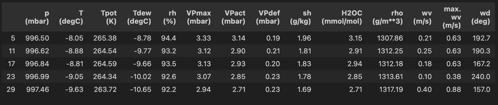
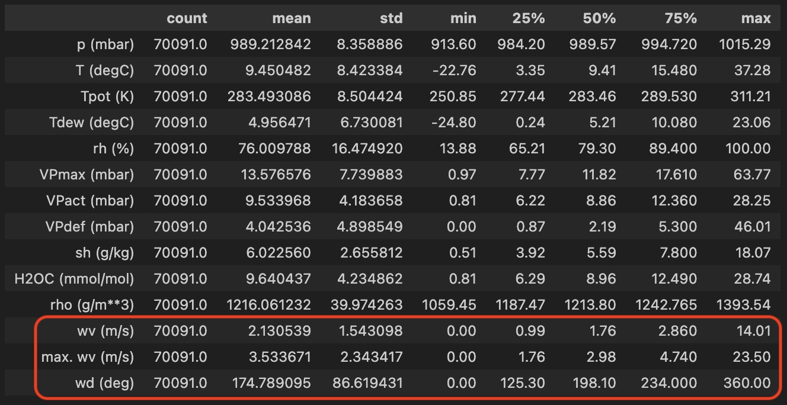
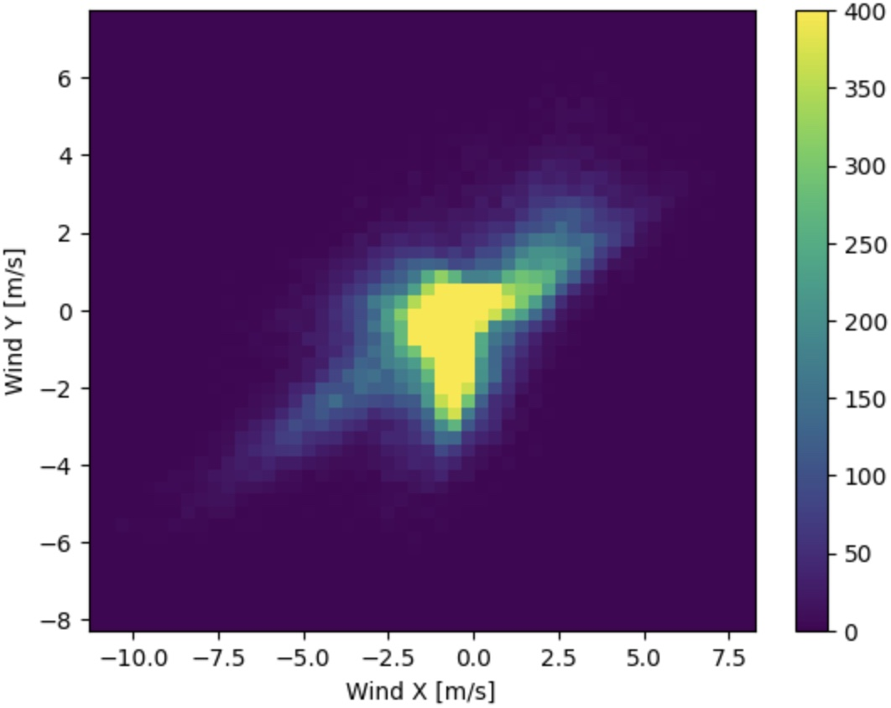
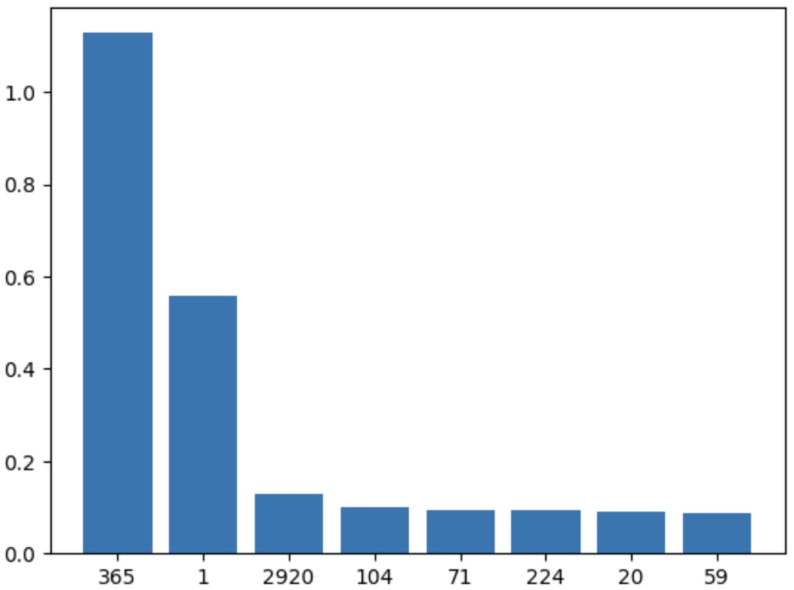
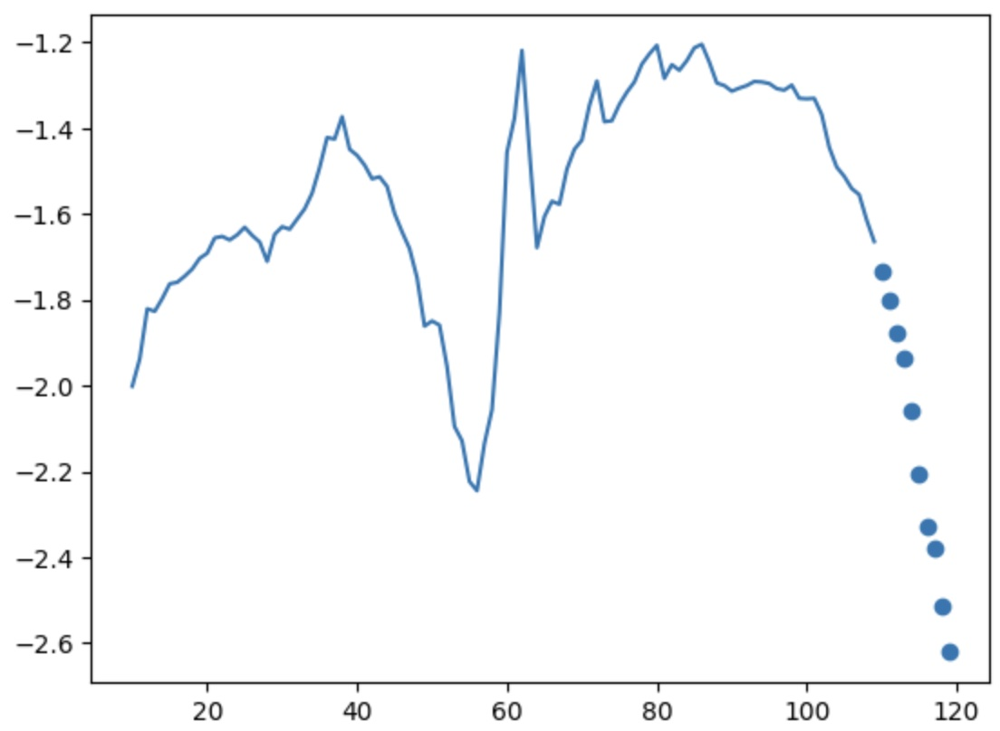
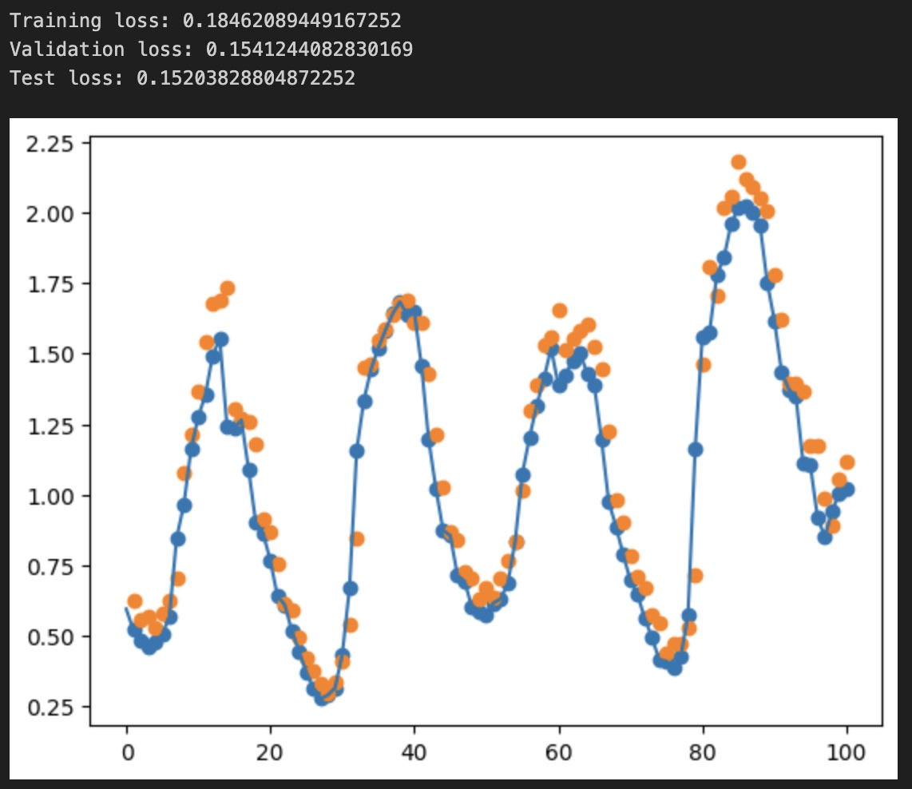
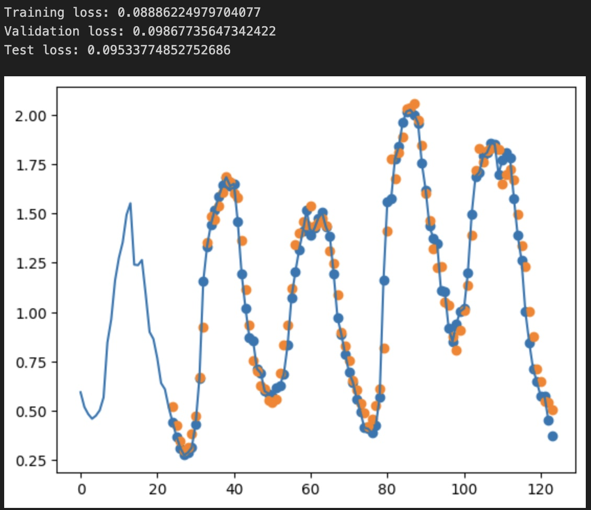
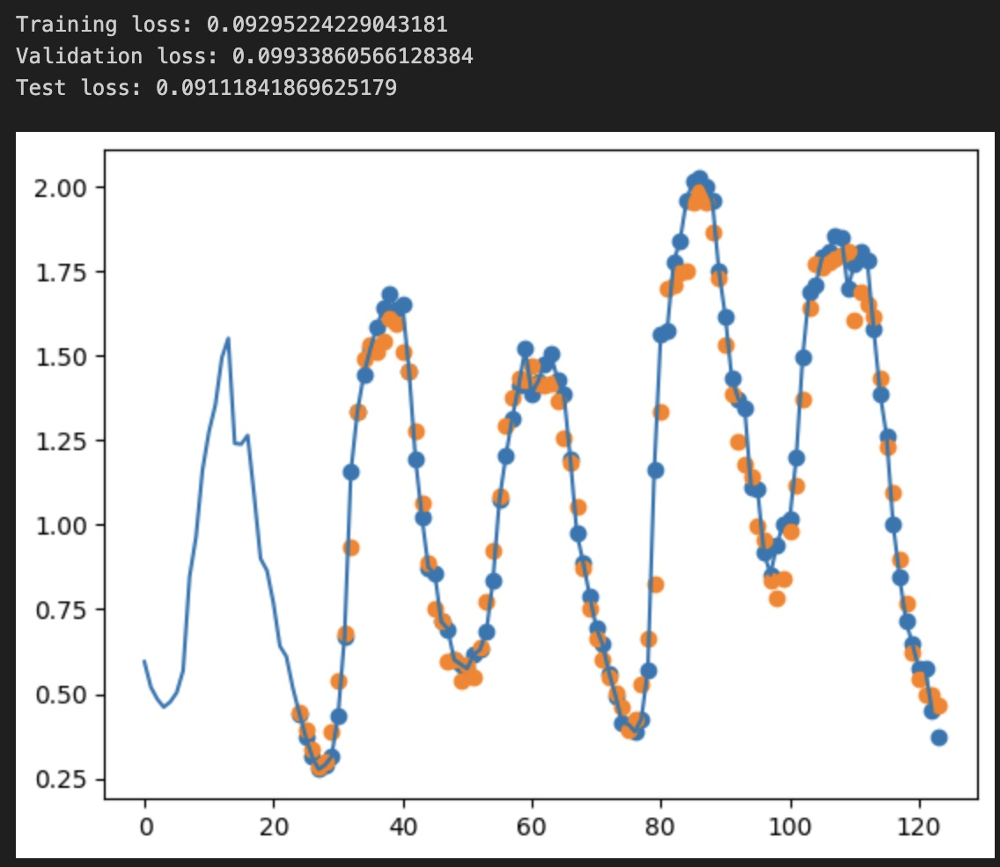
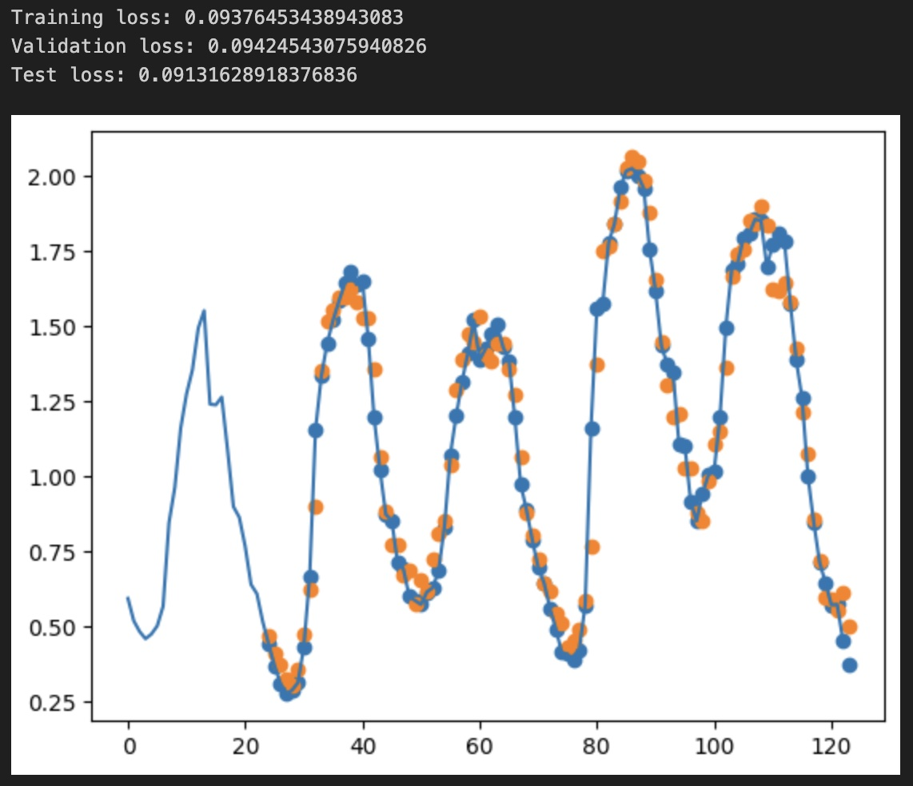

Timeseries Analysis with PyTorch
PyTorch is a widely used machine learning library, has an beautiful pythonic syntax and, above all, runs extremely fast on my M1 MacBook with no hacking required to make it run. I write this post following the steps I made to learn the library, by roughly translating the Time series forecasting with TensorFlow tutorial to PyTorch, while making changes to it along the line to satisfy my curiosity.
Hello World
Before starting, let's make sure we have the right libraries installed.
$pip install torch matplotlib numpy pandas torchvision torchaudio
Then, import the right libraries and select a device for running accelerated PyTorch code.
import pandas as pd
import numpy as np
import torch
from torch import nn
from torch.utils.data import DataLoader, Dataset
from torchvision.transforms import ToTensor
import matplotlib.pyplot as plt
from os import path
device = (
"cuda"
if torch.cuda.is_available()
else "mps"
if torch.backends.mps.is_available()
else "cpu"
)
print(device)
In my case, the device will be mps, as I am running this on a MacBook Pro M1 Max.
Loading and processing the data
For this example I will use the Jena Climate dataset and the goal will be to predict the temperature (Celsius) over the future 1 or more hours. We are going to use 4 different approaches, a basic linear regression, a simple neural network, a convolutional neural network and, then, a recurrent neural network. They all give pretty good results and we will discuss the differences throughout the post.
Unlike in the TensorFlow tutorial on which this code is based, I will remove the temperature-related features from the training data and only keep them in the target variable. As such, we make the work of the ML models a bit harder.
The first step is loading the data and separating the date_time variable. We will process the date_time a bit later to include it back in the trianing set.
# df contains hourly data
df = pd.read_csv("jena_climate_2009_2016.csv")[5::6]
date_time = pd.to_datetime(df.pop('Date Time'), format='%d.%m.%Y %H:%M:%S')
df.head()

Next, we are going to do a bit of data cleanup and transform some of the variables:
- Ensure there is no windspeed lower than 0
- Convert wind direction from degrees to vectors (maintaining magnitude)
- Standardize all numeric features for better processing by the neural networks
- Validate the periodicity of the time signal and transform from date_time to continuous variables that can be used in training.
One by one, in the order specified above.
df['wv (m/s)'][df['wv (m/s)'] < 0] = 0
df['max. wv (m/s)'][df['max. wv (m/s)'] < 0] = 0
df.describe().transpose()

# convert the wind degrees and wind speed to a wind vector
wv = df.pop('wv (m/s)')
max_wv = df.pop('max. wv (m/s)')
# Convert to radians.
wd_rad = df.pop('wd (deg)')*np.pi / 180
# Calculate the wind x and y components.
df['Wx'] = wv*np.cos(wd_rad)
df['Wy'] = wv*np.sin(wd_rad)
# Calculate the max wind x and y components.
df['max Wx'] = max_wv*np.cos(wd_rad)
df['max Wy'] = max_wv*np.sin(wd_rad)
# show wind vectors looking great
plt.hist2d(df['Wx'], df['Wy'], bins=(50, 50), vmax=400)
plt.colorbar()
plt.xlabel('Wind X [m/s]')
plt.ylabel('Wind Y [m/s]')
ax = plt.gca()
ax.axis('tight')

Nothing fancy so far, just similar procesing as in the TensorFlow tutorial.
# standardize all numeric features
df = (df-df.mean(axis=0)) / df.std(axis=0)
df["T (degC)"].plot()
df["p (mbar)"].plot()
The following snippet of code is slightly more intersting. While in this case our intuition tells us that we have yearly and daily periodicity, the safest way to approach the problem of timeseries is to validate. We are going to analyse the spectrum of the signal and confirm our intuition. Comments inline, in the code.
# check for seasonality
from collections import defaultdict
# confirm the data is sampled hourly
print(date_time[0:10])
# compute the fast fourier transform of the temperature
temp = np.array(df["T (degC)"])
fft = np.fft.fft(temp)
N = len(temp) # length
T = 1 # sample frequency, 1/hour
D = N * T # duration
# the following line computes the actual frequencies in the spectrum
frequency = np.fft.fftfreq(N, d=T)
# we are interested only in the first half of the array
# the second half is filled with the conjugates for the first half
fft = fft[:int(N/2)]
frequency = frequency[:int(N/2)]
# take the highest 10 frequencies and compute their amplitude
max = np.abs(fft).argsort()[::-1][:10]
# compute the lengh of the period (1/freq) an the magnitudes
periods = (1.0 / frequency[max]) / 24 # 24 == convert from hours to days
magnitudes = np.abs(fft[max]) * 2 / N
# sampling is not perfect, hence some of the frequencies may fall in
# two different buckets: e.g. 0.99h and 1.01h
cnt = defaultdict(lambda: 0)
for k, v in zip([str(int(x+0.1)) for x in periods], magnitudes):
cnt[k] += v
# plot the frequencies and their magnitude
plt.bar(cnt.keys(), cnt.values())
# we see clearly there is a yearly fundamental and a daily fundamental
# (2920 days == 8 years - the number of years we have data for)
Periods in days - outstanding at 365 days and 1 day, as expected:

Given the information above, we can safely encode time as sin and cos for two different periods - yearly and daily. We are using both sin and cos in order to not confuse the algorithm as each sin and cos cross the 0 axis twice, having twice the same values over a period.
timestamp_s = date_time.map(pd.Timestamp.timestamp)
day = 24*60*60
year = (365.2425)*day # a bit of correction
# normalized already
df['Day sin'] = np.sin(timestamp_s * (2 * np.pi / day)) * 0.5
df['Day cos'] = np.cos(timestamp_s * (2 * np.pi / day)) * 0.5
df['Year sin'] = np.sin(timestamp_s * (2 * np.pi / year)) * 0.5
df['Year cos'] = np.cos(timestamp_s * (2 * np.pi / year)) * 0.5
Generating the datasets
After ensuring we have clean data, we are going to generate 3 data splits: training, validation and test.
# timeseries, so no random split
train_df = df[ : int(0.7 * len(df))]
val_df = df[int(0.7 * len(df)) : int(0.9 * len(df))]
test_df = df[int(0.9 * len(df)) : ]
In PyTorch, data is fed to the training loop through a DataLoader object. It handles batching and shuffling, and wraps a user-defined Dataset. The Dataset object needs to implement the standard __len__ and __getitem__ functions, so it behaves like an array.
For our code, we will implement a custom Dataset which wraps a Pandas dataframe and returns a specified number of time points as features and another number of time points as targets. In addition, it will have plotting functions for easier debugging and vizualization.
The parameters for the Dataset construction are as follows:
df- the Pandas dataframe to wrapinput_window_len- how many past points of time (hours in our case) to return as featurestarget_len- how many points in the future to return as target, for one-shot predictionsshift- when moving through the dataset, by how many datapoints to advance the cursor,var_columns- which columns to include in the featurestarget_columns- which columns to include in the targettransformandtarget_transform- how to transform the resulting data, in our case it will be transformed to atorch.Tensorand dispatched to the GPU.
One thing to note is to never-ever use Pandas in the training loop as it will slowdown training by at least 100x. Only use numpy arrays and do the conversion outside of the __getitem__ function. We do this update in the preprocess method of the class.
class WindowedDataset(Dataset):
def __init__(self, df,
input_window_len,
target_len, shift, v
ar_columns, target_columns,
transform=None,
target_transform=None) :
super().__init__()
self.df = df
self.input_window_len = input_window_len
self.target_len = target_len
self.shift = shift
self.transform = transform
self.target_transform = target_transform
self.target_columns = target_columns
self.var_columns = var_columns
self.precompute()
def get_input_size(self):
return self.input_window_len * len(self.var_columns)
def get_target_size(self):
return self.target_len * len(self.target_columns)
def count_channels(self):
return len(self.var_columns)
def __len__(self):
return int((len(self.df) - self.target_len - self.input_window_len) / self.shift)
def precompute(self):
self.variables_ = np.array(self.df[self.var_columns])
self.target_ = np.array(self.df[self.target_columns])
def __getitem__(self, idx):
start = idx * self.shift
variables = self.variables_[start : start + self.input_window_len]
variables = variables.flatten()
target = self.target_[start + self.input_window_len : start + self.input_window_len + self.target_len]
target = target.flatten()
if self.transform:
variables = self.transform(variables)
if self.target_transform:
target = self.target_transform(target)
return variables, target
def plot(self, idx, col_name):
if not hasattr(idx, '__iter__'):
idx = [idx]
else:
idx = list(idx)
try:
var_tmp = self.var_columns
target_tmp = self.target_columns
self.var_columns = [col_name]
self.target_columns = [col_name]
self.precompute()
cnt = self.input_window_len + self.target_len + (len(idx) - 1) * self.shift
v = [0] * (self.input_window_len + (len(idx) - 1) * self.shift)
t = [0] * (self.target_len + (len(idx) - 1) * self.shift)
start = idx[0] * self.shift
for i in idx:
v_, t_ = self[i]
ii = (i - start) * self.shift
v [ii : ii + len(v_)] = v_
t [ii : ii + len(t_)] = t_
axis = range(start, start + cnt)
plt.plot(axis[0 : len(v)], v)
plt.scatter(axis[self.input_window_len : cnt], t)
return axis, start, cnt
except Exception as e:
raise e
finally:
self.var_columns = var_tmp
self.target_columns = target_tmp
self.precompute()
def plot_prediction(self, idx, col_name, model):
if not hasattr(idx, '__iter__'):
idx = [idx]
axis, start, cnt = self.plot(idx, col_name=col_name)
with torch.no_grad():
preds = []
# slow way to infer
for i in idx:
X, _ = self[i]
X = X[None, :] # add batch dimension
X = X.to(device)
y = model(X).item()
if hasattr(y, "__iter__"):
preds += list(y)
else:
preds.append(y)
plt.scatter(axis[cnt - len(preds) : cnt], preds)
plt.show()
Let's test the WindowedDataset and ask it to plot something.
# build a test dataset based on train_df
# return 100 points for each index
# return 10 points for each target
# advance by 1
wds = WindowedDataset(train_df, 100, 10, 1, df.columns, "T (degC)" )
# print the last object from the set
print(wds[len(wds) - 1])
# plot the series starting at index 10
# and use only the temperature
# the feature will be plotted with continuous line
# the target with dots
wds.plot(10, "T (degC)")
And the result of the plot - 100 points for the features, only the degrees Celsius (continous line) and the target, 10 points, as dots. The X-axis starts from 10 (starting index) to 120 (10 + 100 + 10).

We finish this part of data preparation and dataset construction by presenting the functions that construct 3 Dataloader objects for train, validation and test respectively. To note the transform lambda which transforms from numpy to a torch.Tensor of float32.
def make_dataloader(df, input_window_len, target_len, shift):
cols = list(df.columns)
# make it a bit more complicated, remove the temperature completely
# usually this is not needed for timeseries prediction
# but more interesting to see how the models behave
cols.remove("T (degC)")
cols.remove("Tpot (K)")
cols.remove("Tdew (degC)")
print(cols)
return DataLoader(
WindowedDataset(
df, input_window_len, target_len, shift, cols, ["T (degC)"],
transform=lambda v: torch.tensor(v, dtype=torch.float32),
target_transform= lambda v: torch.tensor(v, dtype=torch.float32)
),
batch_size=128,
shuffle=True)
def make_loaders(input_window_len, target_len, shift):
train_loader = make_dataloader(train_df, input_window_len, target_len, shift)
valid_loader = make_dataloader(val_df, input_window_len, target_len, shift)
test_loader = make_dataloader(test_df, input_window_len, target_len, shift)
return train_loader, valid_loader, test_loader
Training loop and evaluating
PyTorch uses Autograd and a pretty straightforward training loop. To note are:
- Transferring the tensors to the GPU with the .to(device) calls.
- Defining a custom loss (RMSELoss)
- with torch.not_grad() when making predictions
- How backpropagation is implemented and using the optimizer
- Saving and loading a model
def RMSELoss(yhat,y):
return torch.sqrt(torch.mean((yhat-y)**2))
def eval_(model, dl):
res = []
with torch.no_grad():
for batch, (X, y) in enumerate(dl):
X, y = X.to(device), y.to(device)
pred = model(X)
res.append(RMSELoss(y, pred).item())
# take only the first 20 batches top
if batch > 20:
break
return np.mean(res)
def eval(model, train_ds, valid_ds, test_ds):
print("Training loss:", eval_(model, dl=train_ds))
print("Validation loss:", eval_(model, dl=valid_ds))
print("Test loss:", eval_(model, dl=test_ds))
def create_trainer(dataloader, model, epochs):
try:
torch._dynamo.config.suppress_errors = True
model = torch.compile(model)
except:
print ("torch.compile() not available.")
losses = []
m = model
loss_fn = RMSELoss
optimizer = torch.optim.Adam(model.parameters(), lr=2e-4)
def train():
# loop through the dataset and perform backpropagation"
size = len(dataloader.dataset)
model.train()
for batch, (X, y) in enumerate(dataloader):
X, y = X.to(device), y.to(device)
# Compute prediction error
pred = model(X)
loss = loss_fn(pred, y)
# Backpropagation
optimizer.zero_grad()
loss.backward()
optimizer.step()
# save losses for plotting
losses.append(loss.item())
if batch % 100 == 0:
loss, current = loss.item(), (batch + 1) * len(X)
print(f"loss: {loss:>7f} [{current:>5d}/{size:>5d}]")
def trainer():
# load a model if already exists
# else loop (epochs) times through the train function
model_str = str(m)
model_str = ''.join([s for s in model_str if s.isalnum()])
model_str = model_str[0 : min(150, len(model_str))]
if path.exists(model_str):
return torch.load(model_str)
else:
for i in range(epochs):
print("Epoch ", i)
train()
plt.plot(losses)
plt.show()
torch.save(m, model_str)
return m
return trainer
Basic Linear Regression
The simplest model will take the atmospheric parameters for one hour and predicts the temperature for the next hour. It's a basic neural network with 1 neuron and no activation, equivalent to a simple linear regression.
The interesting things to note are:
- The structure of a neural network in PyTorch, inheriting from the nn.Module base class
- The forward() function which performs the forward propagation and evalution step
- The use of an nn.Linear object which is the equivalent of a Dense layer
- The use of .to(device) to ensure all parameters are submitted to the GPU
class BasicLinear(nn.Module):
def __init__(self, input_size, target_size):
super().__init__()
self.linear_stack = nn.Sequential(
nn.Linear(input_size, target_size),
)
def forward(self, x):
return self.linear_stack(x)
# one hour of data and predict the following hour
t, v, tt = make_loaders(1, 1, 1)
model = BasicLinear(t.dataset.get_input_size(), t.dataset.get_target_size()).to(device)
print(model)
As a side note, if I were to build a custom linear layer, CustomDense, which does exactly the same thing as the nn.Linear, it would be as follows. Please note the use of nn.Parameter() to allow the system to keep track of the trainable weights.
class CustomDense(nn.Module):
def __init__(self, size_in, size_out):
super().__init__()
#1. Explicit what is trainable parameters
# nn.Parameter - trainable parameters
# it's what we send to the constructor of the Optimizier.
self.weights = nn.Parameter(
torch.Tensor(size_out, size_in)
)
self.bias = nn.Parameter(
torch.Tensor(size_out)
)
#2. Initialize weights and biases
# He initialization
nn.init.kaiming_uniform_(self.weights, a=np.sqrt(5))
nn.init.uniform_(self.bias, -0.1, 0.1)
def forward(self, x):
# w times x + b
w_times_x= torch.mm(x, self.weights.t())
return torch.add(w_times_x, self.bias)
Now let's use the basic network above.
# train for 5 epochs
model = create_trainer(t, model, 5)()
eval(model, t, v, tt)
# plot the temperature - actual: blue dots, predicted: organge dots
v.dataset.plot_prediction(range(0, 100), "T (degC)", model)
We observe the loss values for all sets, showing we don't overfit but also not fit too well the data.

Deep Neural Network
We are going to proceed similarly as before but add more neurons to the mix. We now send 24h of data to predict 1h in advance. The code can be changed to predict as many hours as we want in advance, buy changing only the second parameter in the make_loaders(24, 1, 1) call.
# deep learning, dense, given 24h of data, predict 1h in advance,
class DNNRegressor(nn.Module):
def __init__(self, input_size, target_size):
super().__init__()
self.linear_stack = nn.Sequential(
nn.Linear(input_size, input_size),
nn.ReLU(),
nn.Linear(input_size, 64),
#nn.Dropout(p=0.2),
nn.ReLU(),
nn.Linear(64, 64),
nn.ReLU(),
nn.Linear(64, target_size)
)
def forward(self, x):
return self.linear_stack(x)
t, v, tt = make_loaders(24, 1, 1)
model = DNNRegressor(t.dataset.get_input_size(), t.dataset.get_target_size()).to(device)
print(model)
print("Total params: ", sum(p.numel() for p in model.parameters() if p.requires_grad))
With the model structure and number of parameters:
DNNRegressor(
(linear_stack): Sequential(
(0): Linear(in_features=384, out_features=384, bias=True)
(1): ReLU()
(2): Linear(in_features=384, out_features=64, bias=True)
(3): ReLU()
(4): Linear(in_features=64, out_features=64, bias=True)
(5): ReLU()
(6): Linear(in_features=64, out_features=1, bias=True)
)
)
Total params: 176705
The results are as follows, and we immediately notice the lower loss while still not overfitting the dataset. Also visually, the predictions look more precise than in the linear regression case, which is expected.

Convolutional Neural Network
We are now going to replace one of the dense layers above with a convolutional layer. CNNs tend to have less parameters than basic DNNs due to the locality of the convolutional transform. They also tend to incorporate better local relationships in the data and extract patterns. This is why they are widely used for image processing.
To ensure the right data format is sent to the Conv1D layer, we first play a bit with arrays. Fortunately PyTorch allows immediate results, so here they are:
x = torch.tensor(
[
[1, 2, 3, 4, 5, 6, 7, 8],
[1, 2, 3, 4, 5, 6, 7, 8],
[1, 2, 3, 4, 5, 6, 7, 8],
], dtype=torch.float32)
x = torch.reshape(x, (x.shape[0], int(x.shape[1] / 2), 2)).permute(0, 2, 1)
print(x.numpy())
Outputting
[[[1. 3. 5. 7.]
[2. 4. 6. 8.]]
[[1. 3. 5. 7.]
[2. 4. 6. 8.]]
[[1. 3. 5. 7.]
[2. 4. 6. 8.]]]
This is inline with our expectation that Conv1D operation will convolve along the time dimension. With this knowledge, we build our network.
class CNNRegressor(nn.Module):
def __init__(self, in_channels, target_size):
super().__init__()
self.in_channels = in_channels
self.seq_stack = nn.Sequential(
nn.Conv1d(in_channels=in_channels, out_channels=256, kernel_size=5, padding='same'),
nn.ReLU(),
nn.AdaptiveAvgPool1d(output_size=8),
nn.Flatten(),
nn.Linear(256 * 8, 64),
nn.ReLU(),
nn.Linear(64, 64),
nn.ReLU(),
nn.Linear(64, target_size)
)
def forward(self, x):
x = torch.reshape(x, (x.shape[0], int(x.shape[1] / self.in_channels), self.in_channels)).permute(0, 2, 1)
return self.seq_stack(x)
t, v, tt = make_loaders(24, 1, 1)
model = CNNRegressor(t.dataset.count_channels(), t.dataset.get_target_size()).to(device)
print(model)
print("Total params: ", sum(p.numel() for p in model.parameters() if p.requires_grad))
CNNRegressor(
(seq_stack): Sequential(
(0): Conv1d(16, 256, kernel_size=(5,), stride=(1,), padding=same)
(1): ReLU()
(2): AdaptiveAvgPool1d(output_size=8)
(3): Flatten(start_dim=1, end_dim=-1)
(4): Linear(in_features=2048, out_features=64, bias=True)
(5): ReLU()
(6): Linear(in_features=64, out_features=64, bias=True)
(7): ReLU()
(8): Linear(in_features=64, out_features=1, bias=True)
)
)
Total params: 156097
We immediately see the number of total parameters is smaller, even if I did no real tuning to the layer shapes, while the end results are not significantly different from the DNN. For this toy example, I did not expect much improvement.

Recurrent Neural Network
I will finish my post by showing the same algorithm, but this time using RNNs. I will replace all the deep layers with 4 LSTM layers. We will notice a huge decrease (3x compared to the CNN) in the number model parameters, while keeping the same performance, even a notch better. To note the way data is transmitted to the LSTM block; again we make sure the series is sent to the network along the time axis.
class LSTMRegressor(nn.Module):
def __init__(self, input_size, target_size):
super().__init__()
self.lstm = nn.LSTM(
input_size=input_size,
hidden_size=input_size * 2,
num_layers = 4,
batch_first = True)
self.input_size = input_size # number of channels
self.linear = nn.Linear(input_size * 2, target_size)
def forward(self, x):
seq_len = int(x.shape[1] / self.input_size)
x = torch.reshape(x, (x.shape[0], seq_len, self.input_size)).permute(0, 1, 2)
ret_lstm, (hn, cn) = self.lstm(x)
lin_input = ret_lstm[:, -1, :] # take the last output from the sequence
return self.linear(lin_input)
t, v, tt = make_loaders(24, 1, 1)
model = LSTMRegressor(input_size=t.dataset.count_channels(), target_size=t.dataset.get_target_size()).to(device)
print(model)
print("Total params: ", sum(p.numel() for p in model.parameters() if p.requires_grad))
LSTMRegressor(
(lstm): LSTM(16, 32, num_layers=4, batch_first=True)
(linear): Linear(in_features=32, out_features=1, bias=True)
)
Total params: 31777
The LSTM cells will memorize the most important features of th data, processing the input as a sequence passed through the network in one timestep at a time.
The results applying this network to the validation data, below:
